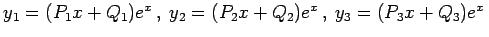

Inhalt Index DeskTop Bronstein

 Differentialgleichungen Gewöhnliche Differentialgleichungen Differentialgleichungen höherer Ordnung und Systeme von Differentialgleichungen Systeme linearer Differentialgleichungen mit konstanten Koeffizienten
Differentialgleichungen Gewöhnliche Differentialgleichungen Differentialgleichungen höherer Ordnung und Systeme von Differentialgleichungen Systeme linearer Differentialgleichungen mit konstanten Koeffizienten


Normalform nennt man den folgenden einfachen Fall eines Systems linearer Differentialgleichungen 1. Ordnung mit konstanten Koeffizienten:
Das Aufsuchen der allgemeinen Lösung eines derartigen Systems erfordert zuerst die Lösung der charakteristischen Gleichung
Zu jeder einfachen Wurzel ri dieser Gleichung gehört ein System partikulärer Lösungen
deren Koeffizienten aus dem System homogener linearer Gleichungen
| (9.45d) |
zu bestimmen sind.
Da auf diese Weise gemäß Abschnitt Triviale Lösung und Fundamentalsystem nur die Verhältnisse Ak bestimmt werden können, ist in dem so gewonnenen System partikulärer Lösungen für jedes ri eine willkürliche Konstante enthalten. Wenn alle Wurzeln der charakteristischen Gleichung verschieden sind, enthält die Summe aller dieser partikulären Lösungen n voneinander unabhängige willkürliche Konstanten, so daß sich damit die allgemeine Lösung des Systems ergibt. Wenn irgendein ri eine m-fache Wurzel der charakteristischen Gleichung ist, dann entspricht dieser Wurzel ein System partikulärer Lösungen der Form
| (9.45e) |
in dem die Polynome sind, die maximal den Grad m - 1 haben können. Diese Ausdrücke werden mit unbestimmten Koeffizienten in das System von Differentialgleichungen eingesetzt. Danach erfolgt eine Division durch , und die Koeffizienten gleicher Potenzen von x auf der linken und der rechten Seite werden gleichgesetzt. Dadurch entstehen lineare Gleichungen für die unbekannten Koeffizienten, von denen m frei wählbar sind. Die anderen Koeffizienten lassen sich durch diese ausdrücken. Auf diese Weise entsteht ein Lösungsanteil mit m beliebigen Konstanten. Der Grad der Polynome kann kleiner als m - 1 sein. Wenn speziell das System (9.45a) symmetrisch ist, d.h. wenn aik=aki gilt, dann reicht es aus, die zu setzen. Für komplexe Wurzeln der charakteristischen Gleichung können die betreffenden Glieder der allgemeinen Lösung genau so auf eine reelle Form gebracht werden, wie es für den Fall einer Differentialgleichung mit konstanten Koeffizienten gezeigt worden ist.
| Beispiel |
|
Für das System lautet die charakteristische Gleichung Daraus folgt . Für die mehrfache Wurzel r2 = 1 erhält man . Einsetzen in die Gleichungen liefert Die allgemeine Lösung lautet somit: . |